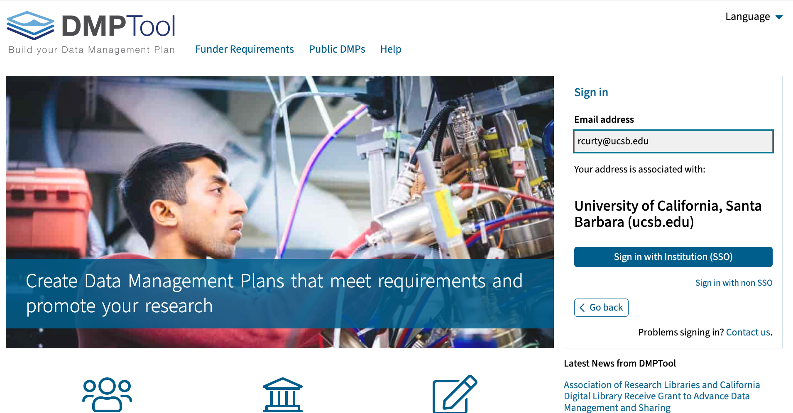
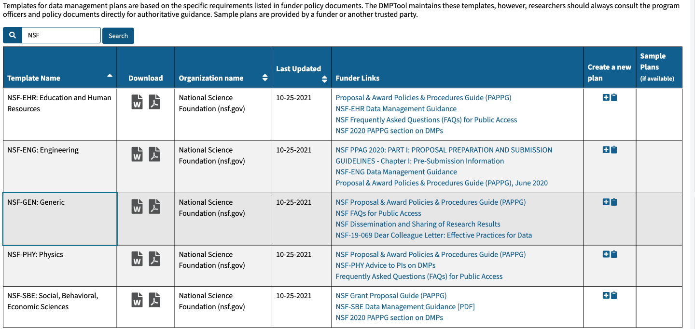
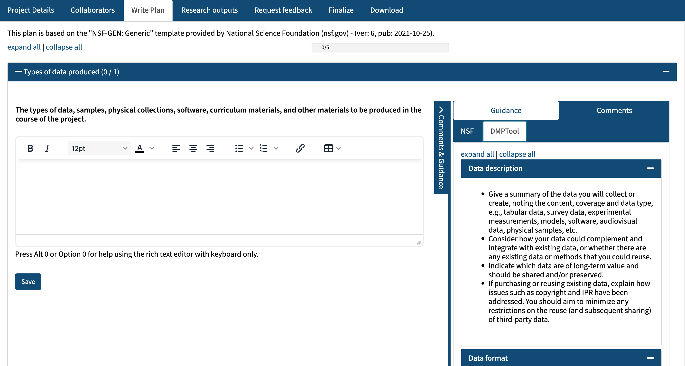

Learning Objectives
- Understand the applications and importance of data management plans (DMPs).
- Identify and describe the core components of a DMP while gaining proficiency in crafting them following best open and reproducible science practices.
- Become familiar with the DMPTool and its functionalities to streamline the creation of DMPs.
5.1 Data Life Cycle
Think of data as having a life cycle. Often, it’s tempting to skip the planning phase and dive straight into data collection, making decisions as you go along. However, careful planning will ultimately save you time in the long run and ensure a smoother process. It is during the planning stage that you will map out the processes and identify the required and available resources to support your research.
The Data Life Cycle is a tool for facilitating successful management and preservation of data throughout a research project. Multiple versions of the data life cycle exist and vary in practice across domains or communities. For example, a meta-analysis project may only focus on the Discover, Integrate, and Analyze phases of the cycle.

DataOne’s Data Management Skillbuilding Hub offers several best practices on how to effectively work with your data throughout all stages of the data life cycle.
A way to use the Data Life Cycle in practice is to:
- Think about the end goal, outcomes, and products of your project
- Think and decide steps in the Data Life Cycle you need to include in your project
- Review best practices for that step in the cycle and start outlining action items in each of those steps
The ultimate goal of this lesson is to provide you with a framework for crafting data management plans (DMPs) that consider data within a life cycle, are compliant with FAIR and CARE principles, and follow best practices for reproducible and open science.
5.2 Data Management Plans
A Data Management Plan is a document that describes how you will obtain and use your data during a research project, as well as what you will do with your data long after the project ends. Think of it as a formal and concise document that articulates how data will be handled during and after you complete your research. Often a DMP encompasses all phases of the Data Life Cycle - from planning, to collecting, to analyzing and ultimately to preservation and storage of the data.
Most funding agencies require researchers to submit a DMP along with their research proposals outlining how scientific data from their research will be managed and shared. While compliance is key for those seeking grants, we like to think of DMPs as a tool that applies to any research project, because a well-thought-out plan means you are more likely to:
- stay organized
- work more efficiently with your team and set specific responsibilities
- truly share and safeguard data, while increasing your research impact
- prevent unauthorized use or the breach of sensitive information, when applicable
- engage your team
- avoid potential issues related to data and code licensing
- better budget for storage, preservation and long-term archiving of the data
A DMP is both a straightforward blueprint for how you manage your data, and provides guidelines for your and your team on policies, access, roles, etc. It is both an accountability and productivity tool that helps you anticipate the required resources, explore available alternatives and identify available support and personnel to help you achieve your research goals, while conforming with reproducible standards and open science principles.
While it is important to plan, it is equally important to recognize that no plan is perfect as change is inevitable. To make your DMP as robust as possible, treat it as a “living document” that you periodically review with your team and adjust as the needs of the project change. We will recap this later in the lesson.
5.2.1 How to Plan?
- Plan early: research shows that over time, information is lost and this is inevitable so it’s important to think about long-term plans for your research at the beginning before you’re deep in your project. And ultimately, you’ll save more time.
- Plan in collaboration: high engagement of your team and stakeholders is not only a benefit to your project, but it also makes your DMP more resilient. When you include diverse expertise and perspectives to the planning stages, you’re more likely to overcome obstacles in the future.
- Utilize existing resources: don’t reinvent the wheel! There are many great DMP resources out there. Consider the article Ten Simple Rules for Creating a Good Data Management Plan (Michener 2015), which has succinct guidelines on what to include in a DMP. Or use an online tool like DMPTool, as we will see in a bit, which provides official DMP templates from funders like NSF, example answers, and allows for collaboration.
- Make revising part of the process: Don’t let your DMP collect dust. Make revising the DMP part of your research project and use it as a guide to ensure you’re keeping on track.
- Include FAIR and CARE principles: Think of the resources we discussed in the previous lesson. When you include FAIR and CARE in the planning process of your DMP, it will make it easier to include and maintain throughout the entire project. Operationalize these acronyms in your answers and incorporate the terminology (and their underlying meaning) into your workflow.
5.2.2 What to include in a DMP?
Most funding agencies require a DMP as part of an application for funding, but the specific requirements differ across and even within agencies depending on the discipline/division and program. If you are writing a data management plan as part of a solicitation proposal, the funding agency will have guidelines for the information they want to be provided in the plan. Always check which template applies to the specific call you are submitting your proposal and use the most updated version available. You may also consult SPARC Open Data and the DMPTool for a list of federal mandates and funder policy documents, including specific guidelines and templates.
After you have identified which template or specific guidelines you should follow, ask yourself:
Do you thoroughly understand all the requirements? Or do you need any clarification before you start?
Is there a page-limit to what you can submit in your proposal? Would it beneficial to have an appendix or a longer version of your DMP for internal use (and not for submission)?
These plans are typically two pages long and are reviewed as an integral part of the proposal. They are considered under intellectual merit, broader impacts, or both, depending on the relevant scientific community.
5.2.2.1 Structure of a DMP
A good plan should include information about the study design, the data to be collected, metadata, policies for data access, sharing, and reuse, as well as long-term archival and preservation. To make this lesson more tangible, we will use the NSF (National Science Foundation) generic template as a framework to understand comprehensively what a data management plan encompasses from start to finish.
5.2.2.1.1 NSF Generic Template
We will be using the generic template from the National Science Foundation (NSF), which is recommended when there is no specific guidance available and can be more easily adapted to specific requirements later if needed. The NSF Generic Template is comprised of five main sections:
Types of data, samples, physical collections, software, curriculum materials, and other materials to be produced in the course of the project;
Standards to be used for data and metadata format and content (where existing standards are absent or deemed inadequate, this should be documented along with any proposed solutions or remedies);
Policies for access and sharing including provisions for appropriate protection of privacy, confidentiality, security, intellectual property, or other rights or requirements;
Policies and provisions for re-use, re-distribution, and the production of derivatives; and
Plans for archiving data, samples, and other research products, and for preservation of access to them.We will delve into each of these sections and provide practical insights to address them shortly.
Before we delve into that, let’s first understand how you can use the DMPTool to streamline and simplify the DMP writing process.
5.3 DMPTool - Part I
5.3.1 Selecting and Using a Template
Fortunately, you do not need to create a DMP from scratch or using a text processor. There is a great tool available to assist you in crafting your DMP, which provides web-based templates (based on funder requirements) that enable you to input the data management plan for your project: the DMPTool (https://dmptool.org). When you’re ready, you can download the DMP in your preferred format. It is free, but you need to sign in using your institutional address for Single Sign-on (SSO).

Choose “Funder Requirements” and search for the NSF. You will see many templates available, but let’s choose NSF-GEN, the generic one. Once you select it, you will be granted with more detailed information about the guidelines and templates and will be offered the option to create a plan clicking on the plus sign.

Next, you’ll be prompted to provide the project details. No need to worry about it at this moment; you can always come back to edit them later. Alternatively, you may click on create a plan and then select the funding organization and the specific template you would like to use from the drop-down menu.
5.4 Writing the Plan
Click on the tab “Write Plan” and expand all sections. Note that in the right hand side contains comments and guidance to support the writing process. Comments can be added by collaborators and reviewers when you request feedback (we will cover these later). The guidance tab contains links and recommendations to help you answer each section. These may be from the funding agency, the DMPTool or the university-specific.

Now, let’s explore each section of the plan based on the chosen template.
5.4.1 Types of Data Produced
Every component of the DMP depends upon knowing how much and what types of data will be collected. Volume matters, as it normally costs more to manage 10 terabytes of data than 10 megabytes of data, both in terms of infrastructure and personnel. But other data attributes also affect costs, metadata, quality assurance, and preservation strategies, and even data policies. A good plan will include information that is sufficient to understand the nature of the data that is produced over the course of the research, including:
Types: A good first step is to list the various data types you expect to collect, compile or create. This may include text, spreadsheets, software and algorithms, models, images and movies, audio files, and patient records. Many research sponsors define data broadly, including physical collections, software and code, and curriculum materials.
Sources: Data may come from direct human observation, laboratory and field instruments, experiments, simulations, and compilations of data from other studies. Reviewers and sponsors may be particularly interested in understanding if data are proprietary, are being compiled from other studies, pertain to human subjects, or are otherwise subject to restrictions in their use or redistribution. When using existing third-party data sources to generate new data, make sure to indicate their provenance, methods for gaining access, and any limitations and license restrictions that may apply.
Volume: Outline the total volume of data and the total number of files expected to be collected can affect all other data management activities (storage, backup, access, preservation, etc.) Giving the hosting institution a heads-up about the anticipated infrastructure to manage large volumes of data is important. Note what volume of data you will create in MB/GB/TB. Indicate the proportions of raw data, processed data, and other secondary outputs (e.g., reports). Consider the implications of data volumes regarding storage, access, and preservation. Do you need to include additional costs to the budget? Consider whether the scale of the data will pose challenges when sharing or transferring data between sites; if so, how do you plan to address these challenges?
5.4.2 Data & Metadata Standards
5.4.2.1 Data formats
Technology changes and proprietary formats may soon become obsolete. When selecting data standards give preference to open standards which are more widely adopted and preferred by the scientific community (e.g., Comma Separated Values [CSV] over Excel [.xls, xlsx]). Also, data are more likely to be accessible for the long term if they are uncompressed, unencrypted, and stored using standard character encoding such as UTF-16.
Explain why you have chosen certain formats. Decisions may be based on staff expertise, a preference for open formats, the standards accepted by data centers, or widespread usage within a given community. Using standardized, interchangeable, or open formats ensures the long-term usability of data; these are recommended for sharing and archiving. When limited by proprietary software to generate and/or process data, consider converting them to open formats before sharing. Also consider indicating non-proprietary options that could read the data (e.g., GNU Octave to read MATLAB files).
5.4.2.2 Metadata
Rows and columns of numbers and characters have little to no meaning unless they are documented in some fashion. Metadata—the details about what, where, when, why, and how the data were collected, processed, and interpreted—provide the information that enables data and files to be discovered, used, and properly cited. Metadata (data about data) is an important part of the Data Life Cycle because it enables data reuse long after the original collection. Imagine that you’re writing your metadata for a typical researcher (who might even be you!) 30+ years from now - what will they need to understand what’s inside your data files? We often refer to metadata “as a love note to your future self”, which you and potential reusers will greatly appreciate.
The goal is to have enough information for the researcher to understand the data, interpret the data, and then reuse the data. Another way to think about metadata is to answer the following questions with the documentation:
- What was measured?
- Who measured it?
- When was it measured?
- Where was it measured?
- How was it measured?
- How is the data structured?
- Why was the data collected?
- Who should get credit for this data (researcher AND funding agency)?
- How can this data be reused (licensing)?
Your DMP won’t be extensive enough to provide such information in detail. Instead, briefly describe how you plan to capture and record metadata, as well as which documentation you intend to produce to enable the future reuse of the data. More importantly, indicate which metadata standard you plan to adopt.
5.4.2.3 Metadata Standards
A metadata standard serves as a specialized manual for your metadata which specifies a common structure and language for describing and managing data or information. It organizes metadata components into collections tailored for particular objectives, assigning them consistent names and definitions, so it can be more easily interpreted by a community and by machines (which represents the “I” interoperability, for the FAIR principles).
Additionally, a metadata standard may incorporate guidelines regarding obligatory content, required syntax, and the use of a regulated vocabulary. Some examples relevant to the Environmental Sciences are:
- Ecological Metadata Language (EML)
- Geospatial Metadata Standards (ISO 19115 and ISO 19139)
- Biological Data Profile (BDP)
- Dublin Core
- Darwin Core
- PREservation Metadata: Implementation Strategies (PREMIS)
- Metadata Encoding Transmission Standard (METS)
Note this is not an exhaustive list. A more comprehensive inventory of metadata standards can be found at: https://rdamsc.bath.ac.uk
Before selecting a metadata standard we suggest you ask the following questions:
Is there a particular standard baked into the system or repository you plan to share your data?
What standards are similar projects and others in your field using?
How big is the user community around this metadata standard?
When in doubt, consult with the campus Library on available options.
5.4.3 Policies for Data Access & Sharing
In this section your DMP should focus on the description of any access and sharing restrictions that may apply to your data. Funders are aware of potential limitations to make all data publicly available, but expect researchers to explicitly acknowledge any anticipated restrictions followed by a compelling justification.
Consider ethical issues when dealing with human subjects data or sensitive data of any kind (e.g., endangered species and protected lands). Address plans to anonymize the data and protect privacy and confidentiality while trying to maximize data sharing whenever possible. Do not limit your response to a shallow statement that data will be made available upon request!
When writing your response consider crafting a paragraph or two that incorporates the following topics:
Access Control:
Will your data be open access, restricted access, or controlled by specific permissions?
Explain how you will control access to the data and specify who will be responsible for managing access controls and permissions.
Data Sharing Mechanisms:
- Provide information about any third-party services or repositories you plan to use. This could include services you plan to use during the project for exchanging files, save versions of your data and code with your team (e.g., Box, GitHub). You may also indicate when and where do you plan to share the data once your project is completed, and provide more details in the [Plans for Archiving & Preservation].
Embargo Periods:
- An embargo is a set time frame when specific data is restricted from public access or sharing, typically limited to those directly involved in the research or with special permissions. If applicable, state whether there will be any embargo periods during which the data will not be accessible or shared. Explain the reasons for these embargoes and their expected duration.
Data Access Requests:
- Outline the process for requesting access to the data. Include information on who can request access, how they should submit requests, and the expected response time.
Data Sharing Agreements:
- If required, mention any formal data sharing agreements or contracts that researchers or collaborators must adhere to when accessing or using the data.
Ethical and Legal Considerations:
Address ethical and legal considerations related to data sharing. Explain how you will handle sensitive or confidential data and ensure compliance with privacy regulations.
What if no restrictions apply?If no restrictions apply, you can openly declare your intention to make all data publicly accessible. Please specify the anticipated time frame, which can coincide with the publication of the results, and indicate the platforms or avenues through which you plan to share your data and other research deliverables.
5.4.4 Policies for Re-use, Re-distribution & Derivatives
It’s important to emphasize that access restrictions and license terms serve distinct and valuable purposes. Access restrictions are primarily concerned with safeguarding data and ensuring secure access, while license terms are crucial for governing how content or intellectual property can be utilized and shared. These terms provide valuable guidelines, specifying aspects like usage scope, license duration, potential payment requirements, and any conditions related to modifications, redistribution, or resale.
This section of the DMP should cover the scientific rights and expectations for the future use of the data and other derivatives produced by your research. More specifically, it should address which licenses you expect to govern your research deliverables. This is important to eliminate any uncertainties and ensure others will reuse it accordingly. Even those these decisions may change, this planning forces researchers to think ahead any anticipated restrictions on use, redistribution, or modification and become familiar with different license options to satisfy them.
Licenses can range from very permissive to very restrictive. Nonstandard licenses and waivers can be a significant barrier to reuse. Whenever possible, apply standard rights waivers or licenses, such as those established by Open Data Commons (ODC) and Creative Commons (CC), that guide subsequent use of data and other intellectual products. The CC0 license and the ODC Public Domain Dedication and License, for example, promote unrestricted sharing and data use.
The license options available to you may be influenced by the terms of use of your selected data repository or archive. CC0 is the most commonly applied license for research data; therefore, it is essential to verify these terms to prevent any conflicting information in your DMP.
5.4.4.1 Plans for Archiving & Preservation
The best-laid preservation plans do not necessarily mean that all project data will see the light of day. Reviewers and research sponsors will be reassured that this will not be the case if you have spelled out how and when the data products will be disseminated to others, especially people outside your research group. First, determine whether the research sponsor or your home institution has specific requirements. Usually, all data need not be retained, and those that do need not be retained forever. Follow the principle as open as possible, as restricted as needed. A recurrent question we get: Should I share the raw data if I am re-using a publicly available data source? The answer is: It depends! If the data source is housed in a repository with a DOI, a citation and attribution on the README will suffice. In that case, you may only share derived datasets (in case you aggregate other data sources or perform transformations). However, if the dataset is on a website or ftp chances are that they won’t be accessible for long-term, and we recommend you also add the raw data to the data folder of your project directory that you plan to share.
Funding agencies and research institutions favor more active approaches, including: (1) publishing the data in an open repository or archive; (2) submitting the data (or subsets thereof) as appendices or supplements to journal articles; and (3) publishing the data, metadata, and relevant code as a “data paper”.
A good dissemination plan includes a few concise statements. State when, how, and what data products will be made available. Generally, making data available to the greatest extent and with the fewest possible restrictions at publication or project completion is encouraged.
The more proactive approaches described above are greatly preferred over mailing or emailing data and will likely save significant time and money in the long run, as the appropriate journals and repositories or archives will support the data curation and sharing.
Furthermore, many journals and repositories provide guidelines and mechanisms for how others can appropriately cite your data, including digital object identifiers (e.g., DOIs), and recommended citation formats; this helps ensure that you receive credit for the data products you create. Keep in mind that the data will be more usable and interpretable by you and others if disseminated using standards and nonproprietary approaches and if the data are accompanied by metadata and associated code used for data processing.
Give preference to a certified curated disciplinary data repository. Examples of disciplinary data repositories are:
- Knowledge Network for Biocomplexity (KNB)
- Arctic Data Center
- The Digital Archaeological Record (tDAR)
- Environmental Data Initiative (EDI)
If not none of the disciplinary options are suitable for your project, consider an institutional, general, or multidisciplinary repository to house your data and code. Some options are:
The Registry of Research Data Repositories (Re3data.org) is a global registry of data repositories that helps researchers to identify suitable options to house their data. When in doubt, consult with the campus Library.
GitHub is not an archival location, it’s great for collaboration and tracking contributions, but projects hosted there are not as easy to find. GitHub works great for ongoing projects, but it is not a preservation tool nor one that facilitates discoverability (most repositories are now indexed on Google Data Sets). Also, Microsoft owns GitHub and does not include tracks citations and other metrics. It is also not ideal for housing projects with a combination of public and restricted datasets and no option for data user agreements if needed.
5.5 DMPTool - Part II
5.5.0.1 Other Features
As promised, now that we have covered key recommendations for addressing each section of the NSF-GEN DMP template, let’s take a quick live tour and explore other valuable functionalities this tool offers:
Project details: You can continually update your project’s status and provide more descriptive information.
Add project contributors: Include project contributors and DMP collaborators with specific permissions (co-owner, editor, or read-only access).
Specify expected research outputs: You can specify both expected and completed research outputs. This includes options for flagging sensitive data or personally identifiable information (PII), selecting intended repositories and metadata schema, providing access information, indicating data size, anticipating the release date, and specifying the license.
Request feedback: You can request for an expert review from our local team directly through the tool.
Set plan visibility: You have the option to set restrictions on who can access your plan.
Register your plan: Register your plan to obtain a DMP ID, a DOI designed specifically for data management plans. This registration allows you to link your plan to your ORCID and project outputs, such as datasets and journal articles, making it easier to demonstrate compliance with your funder’s requirements by the end of the project.
Download in preferred format: you have you can download the plan in your preferred format and style.
5.6 Final considerations
5.6.1 Ask for feedback
Once you complete your DMP draft, the UCSB Library Research Data Services team will be happy to review your it and provide comments and suggestions to enhance its effectiveness and compliance with best open and reproducible science practices. Researchers can continue to seek feedback and make updates to their DMPs post-award whenever needed.
5.6.2 Iterate, Iterate, Iterate
It’s crucial to remember that a DMP is a plan. We recognize that DMPs are dynamic documents that may evolve as research projects progress.
None of the information in it is set in stone and you should change and update it as needed. For example, your initial DMP may have it written to store the final datasets in a general repository such as Figshare, but later on you find that a disciplinary repository like KNB would be a better option to house the data because the data would be more visible and easily findable by others in your community. In that case, you can always go back and update your plan to reflect that change!
What is most important is that your DMP is an accurate reflection when you’re finished with your project so you’re ready to submit your data. This will make the process of submitting data much smoother.
5.6.3 Define Roles & Responsibilities
Some templates include specific sections about roles and responsibilities and data management oversight. It is the Principal Investigator’s responsibility to supervise and coordinate team efforts. Developing a policy where you and your team regularly review and update the DMP as needed can be beneficial. This responsibility along with more specific ones (e.g., data organization and documentation, data anonymization, backup, encryption, access control, etc.) can be assigned to specific team members or rotated among them. There is flexibility in how you choose to implement this policy or plan, but it’s crucial to ensure that expectations are clear and that all collaborators are aware of and in agreement with any changes.
Please organize yourselves into groups of two or three members each. Within your respective groups, you will soon receive an invitation to collaborate on the development of a Data Management Plan (DMP) draft using the DMPTool. It’s important to note that this DMP has been exclusively designed for instructional purposes.
As you engage with the DMP, please thoroughly assess its content, focusing on areas where you identify opportunities for improvement and clarification. Keep in mind the best practices we’ve previouslty covered.
Utilize the commenting and suggestion features in the DMPTool to submit a minimum of two comments and suggestions aimed at enhancing and clarifying the document. We will later convene to discuss the recommendations.